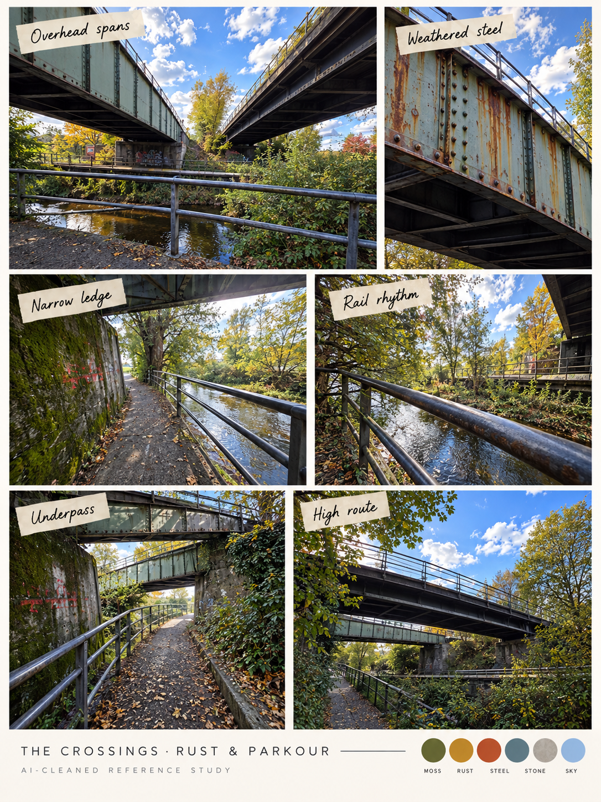

Open the current substantial maze and actual seam-repair viewer →
This earlier thin-bar pass remains a comparison. The clean location boards remain useful source studies.
WinCS · 23 October 2026 · visual research
The location, stretched into a stage.
Flat side elevation: familiar riveted steel, creek, moss and rails arranged for a side-scroller. Start clean, extend in both directions, repair joins, then build up the layers. This viewer is a review document, not a playable prototype.
Compare the original photographic collage
The photos guide identity and materials. Their perspective is not the game camera.

1. Pan across three banners
Hard joins are deliberately visible. The two windows overlap the three originals; they do not add world length. Trees, clouds, native dimensions and route endpoints still differ. This is not a certified seamless export. The common review rectangle is W=2172, H=724; native PNG dimensions are preserved in the provenance file.
2. Inspect seven center-layer trials
The wings above are not decomposed. This center proof separates the roles before repeating the method. Toggle layers, then compare with the master. The generated rail is shifted and several cutouts have edge residue or content drift.
Recomposition diagnostic · generation drift remains; not approved for runtime.